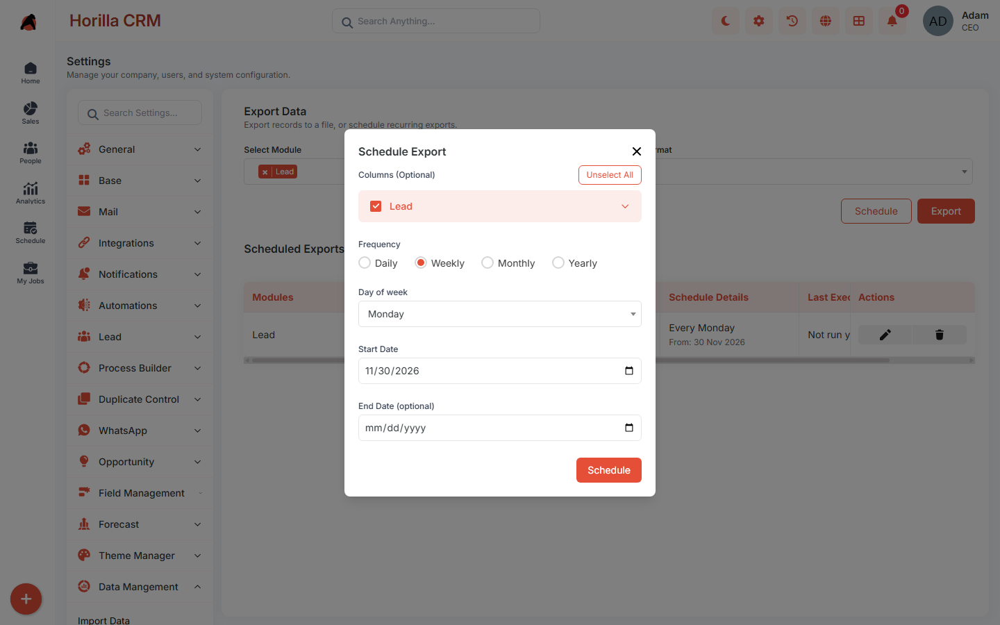
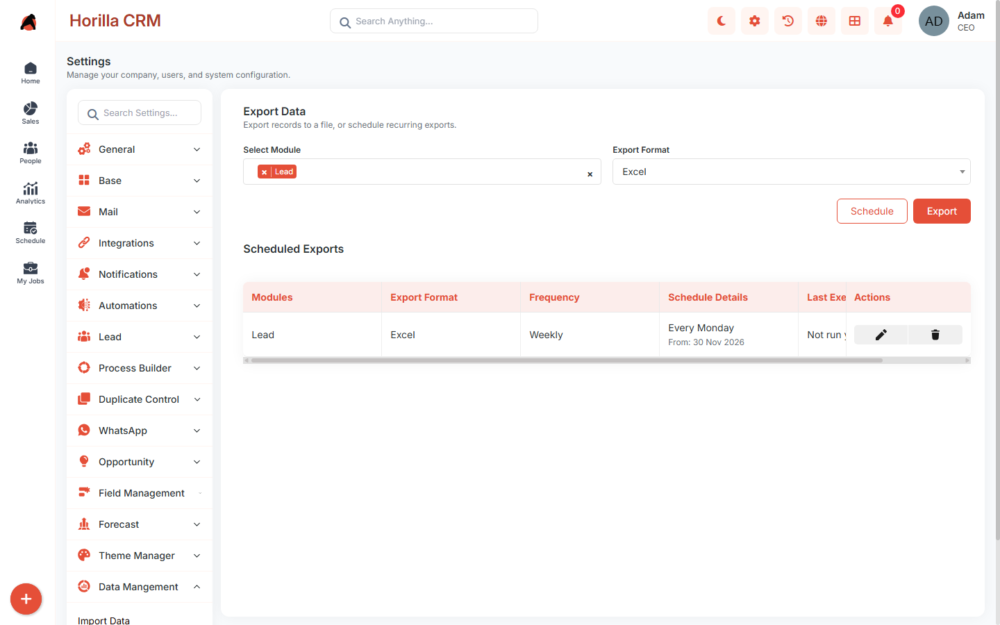

Introduction
Export Data sits under Data Management in Settings and lets users pull data out of the CRM modules and download it. Exports can be taken immediately, or automated so that they run on a recurring schedule.
- Available export formats: Excel, CSV and PDF.
- The feature works with the Base, Mail, Leads, Opportunities and Forecast areas of the system.
Key Features and Functionalities
1. Export Data Overview
Purpose: give users a single interface for choosing which modules to export, in which format, and whether the export should be scheduled.
- Go to Settings → Data Management → Export Data.
- Select the module you want to export. One module or several may be selected at the same time.
- Choose the export format.
- When a single module is selected, the file downloads directly in the chosen format.
- When several modules are selected (for example Company and Department), the generated files are bundled together into a ZIP archive.
2. Scheduled Exports
Purpose: run exports automatically at a set interval and email the resulting file. The mail goes only to the user who created the schedule, at that user's email address. There is no separate recipient field. A schedule is skipped when that user no longer has permission to view exports. Custom fields defined for the module are included with the export.

- On the Export Data page, select the modules and the format as usual.
- Click Schedule to open the Schedule Export modal. The modules and format chosen on the main page are carried over automatically.
- Complete the scheduling fields described below.
- Click Schedule in the modal to submit the form.
Schedule Export fields
| Field | When it applies | Description |
|---|---|---|
| Frequency | Always – required | Radio buttons for Daily, Weekly, Monthly and Yearly. Daily runs every day from the start date; Weekly runs once a week on a chosen day; Monthly runs once a month on a chosen date; Yearly runs once a year on a chosen date and month. Selecting a frequency shows or hides the related fields below. |
| Day of Week | Weekly – required | Dropdown listing Monday through Sunday. |
| Day of Month | Monthly – required | Dropdown listing 1 to 31. |
| Day of Month | Yearly – required |
Dropdown listing 1 to 31 for the day within the chosen
month.
|
| Month | Yearly – required | Dropdown listing January through December. |
| Start Date | Always – required | Date picker. The date must be today or later; dates in the past are rejected. |
| End Date | Optional | Date picker. Left blank, the schedule runs indefinitely. If a date is given, it must fall after the Start Date. |
| Schedule button | Always | Submits the form. On success the modal closes and the new schedule is added to the Scheduled Exports list. On failure, inline errors appear beside the affected fields and the modal stays open. |
Viewing scheduled exports
Existing schedules are listed in a table that shows the details of each schedule together with its execution status.
